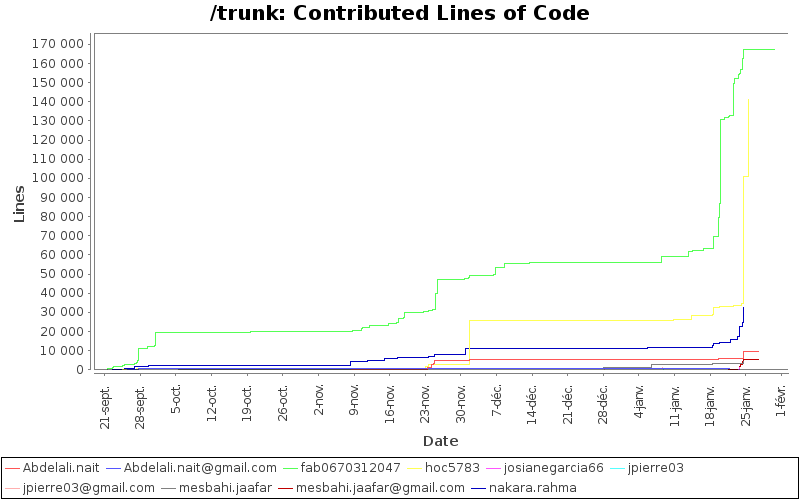
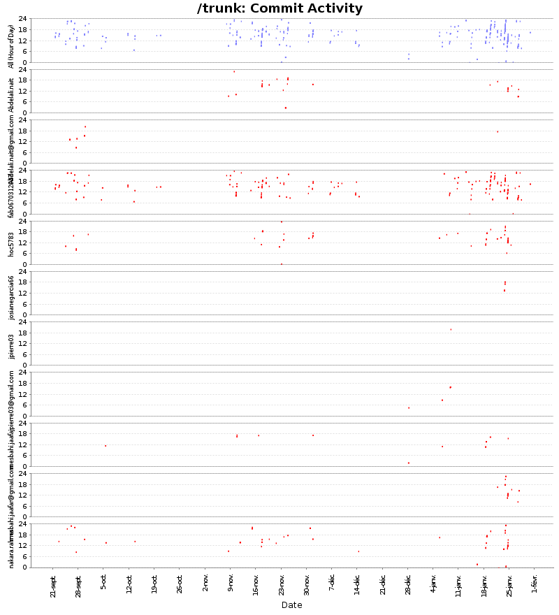
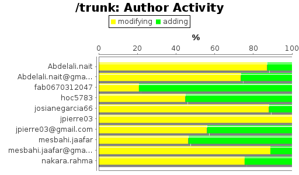
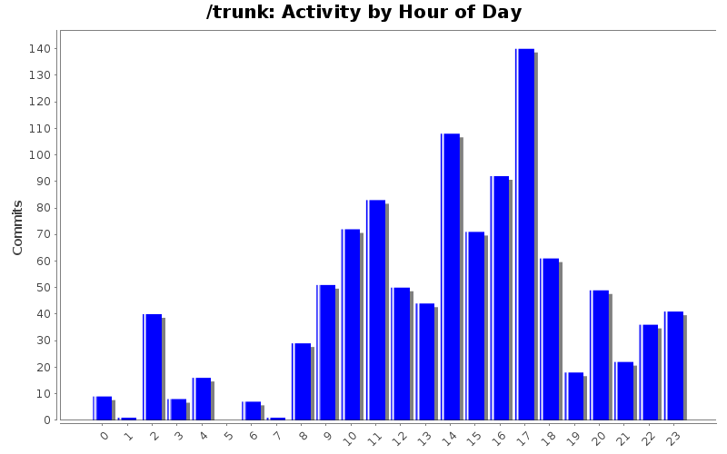
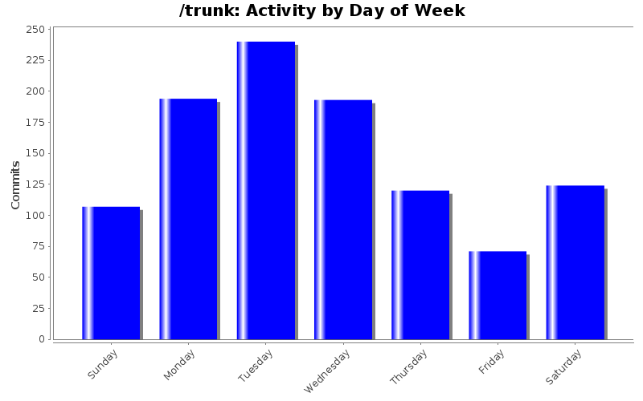

| Author | Author Id | Changes | Lines of Code | Lines per Change |
|---|---|---|---|---|
| Totals | 1037 (100.0%) | 363288 (100.0%) | 350.3 | |
| fab0670312047 | fab0670312047 | 498 (48.0%) | 167371 (46.1%) | 336.0 |
| hoc5783 | hoc5783 | 192 (18.5%) | 141197 (38.9%) | 735.4 |
| nakara.rahma | nakara.rahma | 107 (10.3%) | 32444 (8.9%) | 303.2 |
| Abdelali.nait | Abdelali.nait | 47 (4.5%) | 9584 (2.6%) | 203.9 |
| mesbahi.jaafar@gmail.com | mesbahi.jaafar@gmail.com | 19 (1.8%) | 5554 (1.5%) | 292.3 |
| mesbahi.jaafar | mesbahi.jaafar | 77 (7.4%) | 4365 (1.2%) | 56.6 |
| josianegarcia66 | josianegarcia66 | 10 (1.0%) | 1169 (0.3%) | 116.9 |
| jpierre03@gmail.com | jpierre03@gmail.com | 61 (5.9%) | 1066 (0.3%) | 17.4 |
| Abdelali.nait@gmail.com | Abdelali.nait@gmail.com | 13 (1.3%) | 482 (0.1%) | 37.0 |
| jpierre03 | jpierre03 | 13 (1.3%) | 56 (0.0%) | 4.3 |
| Author | Up to 1/2010 | 2/2010 | 3/2010 | 4/2010 | 5/2010 | 6/2010 | 7/2010 | 8/2010 | 9/2010 | 10/2010 | 11/2010 | 12/2010 | 1/2011 |
|---|---|---|---|---|---|---|---|---|---|---|---|---|---|
| Totals | 0 (-) | 0 (-) | 0 (-) | 0 (-) | 0 (-) | 0 (-) | 0 (-) | 0 (-) | 22207 (100.0%) | 923 (100.0%) | 43900 (100.0%) | 33287 (100.0%) | 262971 (100.0%) |
| fab0670312047 | 0 (-) | 0 (-) | 0 (-) | 0 (-) | 0 (-) | 0 (-) | 0 (-) | 0 (-) | 19218 (86.5%) | 776 (84.1%) | 27515 (62.7%) | 8713 (26.2%) | 111149 (42.3%) |
| hoc5783 | 0 (-) | 0 (-) | 0 (-) | 0 (-) | 0 (-) | 0 (-) | 0 (-) | 0 (-) | 474 (2.1%) | 0 (0.0%) | 2214 (5.0%) | 22976 (69.0%) | 115533 (43.9%) |
| nakara.rahma | 0 (-) | 0 (-) | 0 (-) | 0 (-) | 0 (-) | 0 (-) | 0 (-) | 0 (-) | 2039 (9.2%) | 147 (15.9%) | 8705 (19.8%) | 236 (0.7%) | 21317 (8.1%) |
| Abdelali.nait | 0 (-) | 0 (-) | 0 (-) | 0 (-) | 0 (-) | 0 (-) | 0 (-) | 0 (-) | 0 (0.0%) | 0 (0.0%) | 4613 (10.5%) | 540 (1.6%) | 4431 (1.7%) |
| mesbahi.jaafar@gmail.com | 0 (-) | 0 (-) | 0 (-) | 0 (-) | 0 (-) | 0 (-) | 0 (-) | 0 (-) | 0 (0.0%) | 0 (0.0%) | 0 (0.0%) | 0 (0.0%) | 5554 (2.1%) |
| mesbahi.jaafar | 0 (-) | 0 (-) | 0 (-) | 0 (-) | 0 (-) | 0 (-) | 0 (-) | 0 (-) | 0 (0.0%) | 0 (0.0%) | 853 (1.9%) | 199 (0.6%) | 3313 (1.3%) |
| josianegarcia66 | 0 (-) | 0 (-) | 0 (-) | 0 (-) | 0 (-) | 0 (-) | 0 (-) | 0 (-) | 0 (0.0%) | 0 (0.0%) | 0 (0.0%) | 0 (0.0%) | 1169 (0.4%) |
| jpierre03@gmail.com | 0 (-) | 0 (-) | 0 (-) | 0 (-) | 0 (-) | 0 (-) | 0 (-) | 0 (-) | 0 (0.0%) | 0 (0.0%) | 0 (0.0%) | 623 (1.9%) | 443 (0.2%) |
| Abdelali.nait@gmail.com | 0 (-) | 0 (-) | 0 (-) | 0 (-) | 0 (-) | 0 (-) | 0 (-) | 0 (-) | 476 (2.1%) | 0 (0.0%) | 0 (0.0%) | 0 (0.0%) | 6 (0.0%) |
| jpierre03 | 0 (-) | 0 (-) | 0 (-) | 0 (-) | 0 (-) | 0 (-) | 0 (-) | 0 (-) | 0 (0.0%) | 0 (0.0%) | 0 (0.0%) | 0 (0.0%) | 56 (0.0%) |

| Month | Author | Lines | Tweet This |
|---|---|---|---|
| January 2011 | hoc5783 | 115533 | |
| December 2010 | hoc5783 | 22976 | |
| November 2010 | fab0670312047 | 27515 | |
| October 2010 | fab0670312047 | 776 | |
| September 2010 | fab0670312047 | 19218 |



